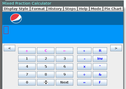
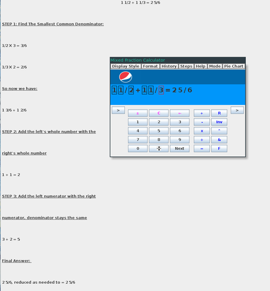
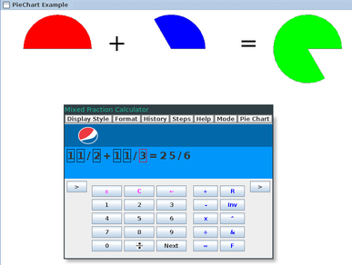
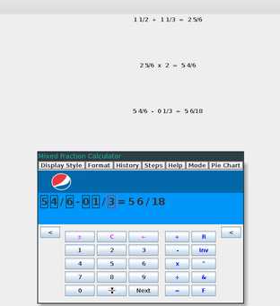

Entering Values

- Numeric values can be entered either with the keyboard or with the buttons labled 1 - 9 on the front of the calculator .
- The calculator can perform the addition, subtraction, multiplication, division, and square operations by entering the +, -, *, /, or ^ symbol in between two mixed fractions with eiter your keyboard or with the provided buttons
- The calculator can find the next Faray number in a sequence by licking the F button or entering F.
- The calculator can find the next mediant of two mixed fractions by clicking he & button or by entering & into the keyboard..
- The - button can be used to change the what value is being entered (i.e switches from numerator to denominator).
- An expression can be evaluated by pressing the enter button or by pressing the = button.
- The inv button can be used to take the current fraction to -1 power
- A value can be cleared by pressing the R button; all values can be cleared by pressing the C button.
- An individual number can be cleared with the backspace button or with the backspace arrow button
- The +_ button can be used to invert the sign of a fraction
Display Options
- The display type of the fraction can be changed by slecting a one of the following styles from the display style tab
- The fraction can either be in irreduced or reduced form. This option can be selected by chosing the option from the format tab.
- The fraction can be in either mixed, proper, or improper form. This option can be chosen with from the mode tab.

- All steps necessary to performa calculation can be seen by selecting toggle intermediate steps from the steps tab or by pressing the < button on the leftmost side of the screen.
- A pie graph representation of a calculation can be displayed by selecting the pie chart option form the pie chart tab..

Additional Features
- Calculations can be printed by pressing the print history option in the history tab.
- The user can view their calculation history by selecting toggle history in the history tab or by pressing the > button on the rightmost sideo of the screen

- The user can record their history by selecting the record history option in the history tab and entering the name of a file to save their history too
- The user can record their history by selecting the playback history option in the history tab and entering the name of a file to read their history from.
- The help button contains the about tab which displays information about the product and the fragile company
- The help button opens a webpage with information on how to use the product